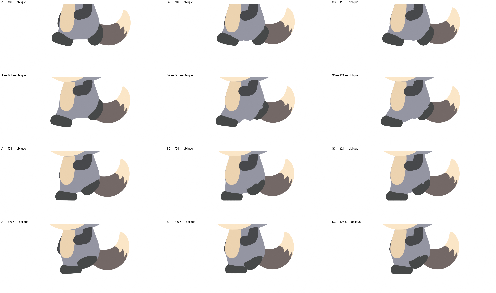
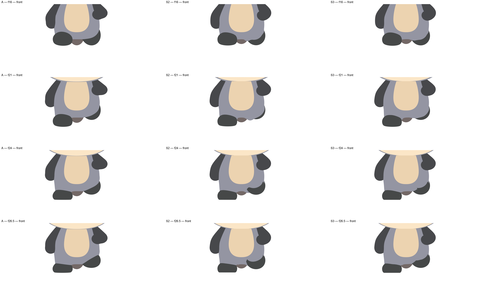
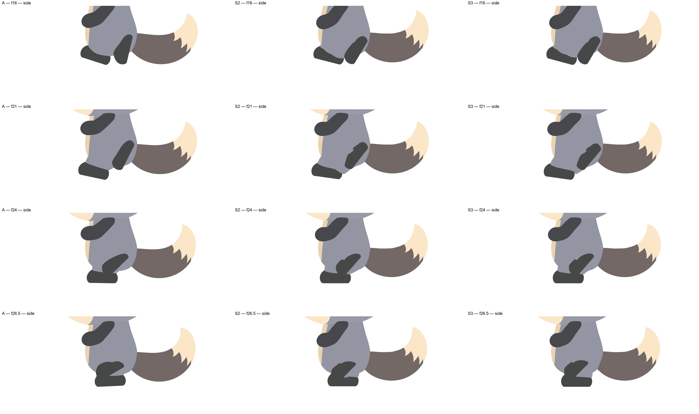
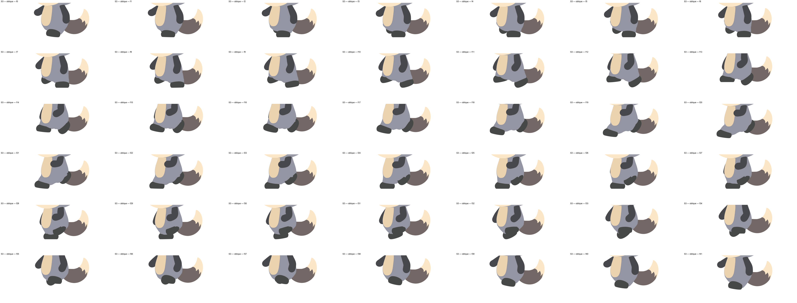
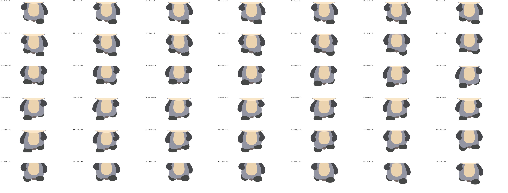
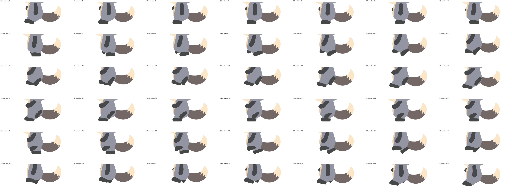
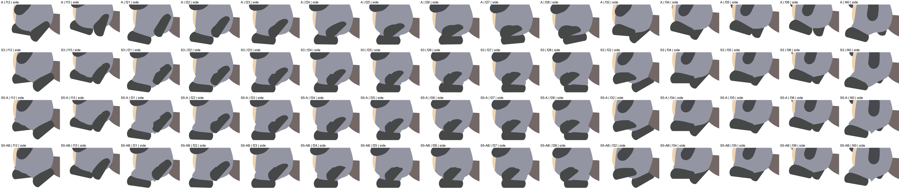
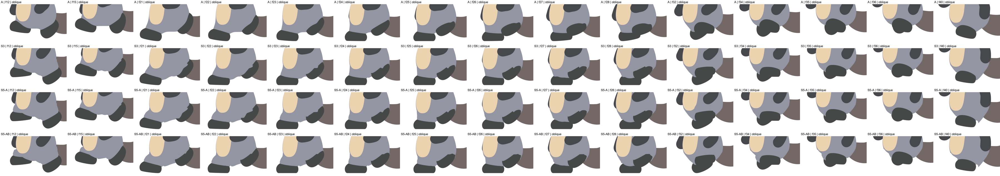

2026-09-30。いただいた「骨を入れるなら、見た目をあまり変えずにリグの形を作り直す必要があるのでは。GPT-6 にやらせるとよい」への回答です。結論：可能です。設計・実装は GPT-6 Astra、検証は Claude の検証役、最終判定は私の目で行いました。
1/4 速度：






行：A（今の方法）／ S3（上の版）／ S5 の 1 段目（足首まわりの重みの付け替え）／ S5 の 2 段目（足を引き寄せるとき膝を折らずに脚を縮める）。
2 段目では、振り上げた足（25〜28 コマ目）の足先にかぶる灰色が減りました。まだ残っているのは、23・24 コマ目の足先の上側のかぶり、21 コマ目の足先の下の出っ張り、40 コマ目の小さな切れ込みです。A の足先ほどはきれいになっていません。

